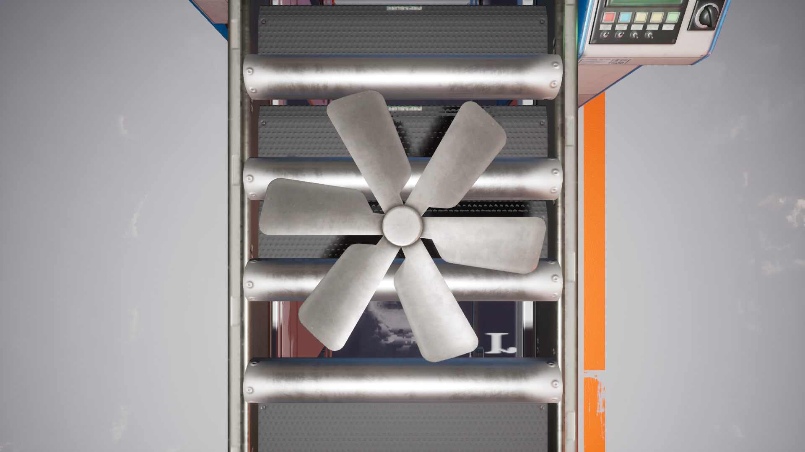
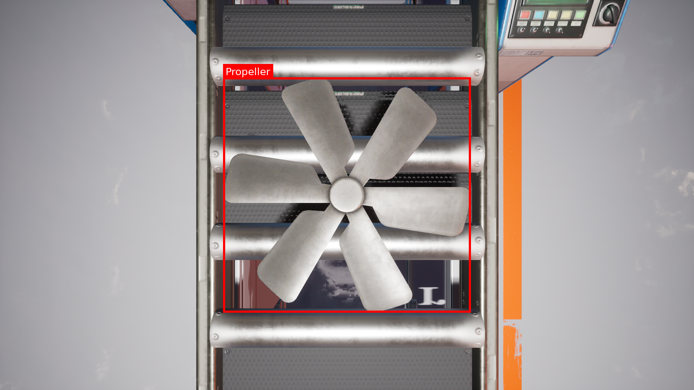

Synthlab / synthlab.io
Procedurally generated, pixel-perfect training data — built to find the faults and edge cases real-world datasets can't capture.
01 — The problem
The faults and failure states that matter most are exactly what real datasets contain the least of.
Capturing enough footage to cover every operating condition can take months — long before a model ever sees it.
Manual annotation — boxes, masks, metadata — is costly, error-prone, and difficult to scale to millions of frames.
The rare defects and failure states that matter most are exactly what real datasets contain the least of.
Footage from factory floors, infrastructure sites, and proprietary equipment is often sensitive, restricted, or off-limits.
02 — The solution
Instead of waiting to encounter a rare fault in the wild, we construct it — and every plausible variant of it — directly inside a controllable, instrumented simulation.
Real2Sim — in three moves
Reference geometry, materials, and conditions from the real environment.
Parametric scene construction in Unreal Engine — infinitely variable, recombined in hours, not months.
Photoreal frames and pixel-perfect ground truth, generated together. Because we build the scene, we know it exactly.
Procedural scene graphs let us spin up new environments, conditions, and defect variations in hours, not months.
Build dense, realistic environments — production lines, sites, sensors — and recombine elements to multiply coverage.
Because we build the scene, we know it exactly: every label, mask, and measurement is generated, not guessed.
03 — What we deliver
Operating a real2sim pipeline, we generate matched sets — photoreal imagery alongside dense, pixel-accurate annotations that make it useful for training and validation.
Full sensor simulation — specific camera models, motion blur, dirt, noise, and other real-world factors that disrupt computer vision.
Object localisation generated directly from scene data — exact, consistent, and free of human labelling error.
Per-pixel instance and semantic masks delivered alongside every frame, for dense-prediction training and evaluation.
Environmental conditions, lighting, camera state, and more — full structured context behind every single image.
04 — From the pipeline
An example output pair — the rendered frame and its machine-generated annotation, produced together, pixel for pixel.


05 — Focus industry
Our current focus is generating the data computer-vision systems need to catch what matters most on a production line: the rare defect, the unusual condition, the fault nobody photographed yet.
Why synthetic wins on the factory floor
Synthetic generation lets us produce the exact failure modes inspection systems need to learn, at any frequency.
Lighting, camera angle, sensor characteristics, surface wear, dirt, motion blur — models train on the full range of what they'll see on the floor.
No ambiguity about where a fault begins or ends — the scene and the fault were built to spec.
The same engine extends naturally to new lines, products, and inspection setups without waiting for real incidents.
06 — Why Synthlab
We're not assembling a pipeline from off-the-shelf parts — the systems that matter most, scene generation and ground-truth extraction, are ours, built specifically for pixel-level accuracy.
Purpose-built tools for scene generation on top of Unreal Engine — construct and reconfigure complex environments fast, rather than hand-building each one.
A custom-made data-extraction system reads truth directly from the scene — boxes, masks, and metadata are exact, not estimated or hand-labelled.
Production-grade real-time rendering gives us photorealism, full sensor simulation, and the speed to iterate at scale.
We're extending our pipeline with MuJoCo for advanced physics simulation — adding accurate dynamics to our procedurally generated scenes.
07 — Track record
We've already built simulation work trusted by some of the most demanding organisations in the world, and we're bringing that rigour to manufacturing.
Simulation work within the AEC industry, collaborating with globally recognised firms from technology leaders to award-winning architecture practices.
Large-scale synthetic datasets for real-world aerial computer vision — building data pipelines that work in production, not just in the lab.
Direct work with one of the largest infrastructure providers in the UK, applying simulation and synthetic data to real operational challenges.
08 — Vision
The same procedural, pixel-accurate pipeline that detects faults on a production line generalises to any domain where real-world data is scarce, costly, or sensitive.
Logistics, energy, infrastructure inspection — anywhere edge-case coverage is the bottleneck to a better model.
Physics-rich scenes for embodied training, powered by our MuJoCo integration — accurate dynamics in synthetic environments.
Any sector where machines need to learn to see things that rarely happen, but matter most when they do.
Synthetic data, built around your problem.
info@synthlab.ioBespoke synthetic datasets for AI & ML training